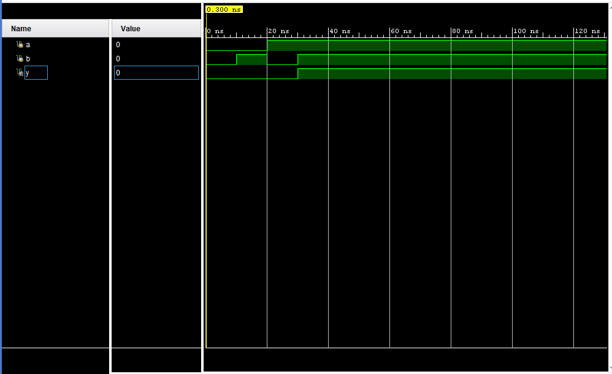
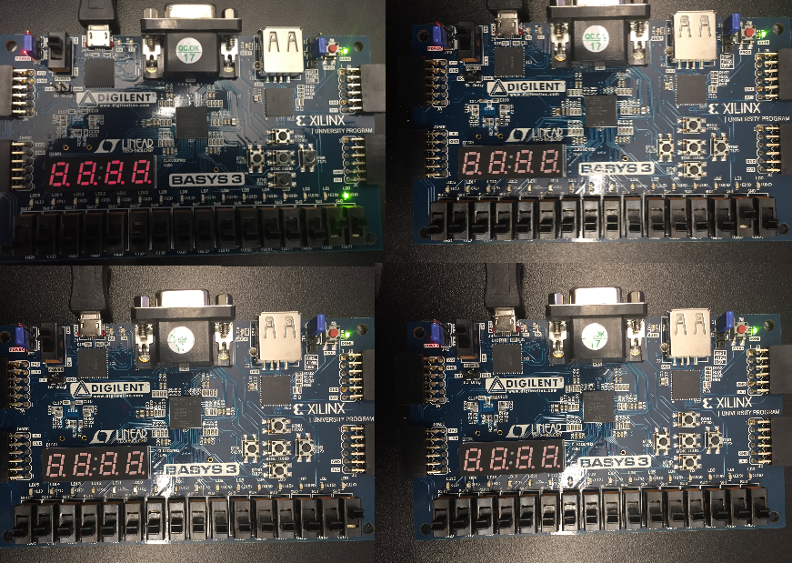

The simulation shows that when a or b
are off, y will then be off. a and b both have to be on for y to be on
aswell. The simulation result is below:

Figure 4: Simulation results are shown above.
The AND logic was used to influence wheter or not an LED would turn on
via AND gate. The only way for an LED light to be displayed is if
both programed switches are on. LED light results are shown below:

Figure 5: Hardware results are shown above.